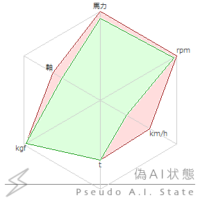

SHIORI Resource
SHIORI Resourceは、旧プロトコルSHIORI/2.5において、オーナードローメニューの表示やhomeurlなどの単純な文字列情報を取得するためのリクエストとして定義されたものが元になっています。
この仕様によって、そうした情報をゴースト側の状態に応じて制御することができます。
SHIORI/3.0以降では、旧仕様の整理の結果通常のSHIORI Eventと実装上明確には区別されていません。
通常のSHIORI Eventと異なる特徴として、戻り値はさくらスクリプトでなく単なる（短い）テキスト（bool値様の物含む）として扱われることが挙げられます。またリクエストIDは「On」から始まらず、英字は小文字で表記されます。
SHIORI情報
以下4つのIDのリクエストは、通常SHIORIが自動的に返却し、各ゴースト作者サイドは関知しないものです。
- version
-
SHIORIのロード直後に発生。
SHIORIはこのイベントに対し、SHIORIのバージョン情報を返却する（SHIORIプロトコルのバージョンではない）。
- craftman
-
SHIORIのロード直後に発生。
SHIORIはこのイベントに対し、SHIORIの作者名を返却する。使用できるのは7ビット文字のみ。
- craftmanw
-
SHIORIのロード直後に発生。
SHIORIはこのイベントに対し、SHIORIの作者名を返却する。7ビット文字に加え8ビット文字およびデフォルトエンコーディングのマルチバイト文字も使用可能。
- name
-
SHIORIのロード直後に発生。
SHIORIはこのイベントに対し、SHIORIの名前を返却する（ゴースト名ではない）。使用できるのは7ビット文字のみ。
- log_path
-
開発者用パレットの「開く」を操作した際に発生。SHIORIログファイルまでのフルパスを返す。
SHIORI Event : enable_log も参照。
ゴースト情報
- homeurl
-
ネットワーク更新用ファイルの位置。
何かSHIORIに重大な不具合が生じた際のバックアップ用にdescript.txtにも書ける。
どちらの記述が優先されるかはdescript.txtの説明を参照。
- useorigin1
-
ネットワーク更新時のファイル数の開始数値。
1でファイル数1から開始、0でMATERIAと同じ0から開始。
- username
-
ユーザーの名称。
- sakura.defaultx
-
本体側の画像ベースX座標。
- kero.defaultx
-
相方側の画像ベースX座標。
- char*.defaultx
-
2人目以降の相方側の画像ベースX座標。
- sakura.defaulty
-
本体側の画像ベースY座標。
- kero.defaulty
-
相方側の画像ベースY座標。
- char*.defaulty
-
2人目以降の相方側の画像ベースY座標。
- sakura.defaultleft
-
本体側のディスプレイ上でのデフォルトX座標。
- kero.defaultleft
-
相方側のディスプレイ上でのデフォルトX座標。
- char*.defaultleft
-
2人目以降のディスプレイ上でのデフォルトX座標。
- sakura.defaulttop
-
本体側のディスプレイ上でのデフォルトY座標。(自由移動モードのみ有効)
- kero.defaulttop
-
相方側のディスプレイ上でのデフォルトY座標。(自由移動モードのみ有効)
- char*.defaulttop
-
2人目以降のディスプレイ上でのデフォルトY座標。(自由移動モードのみ有効)
- (入力ボックス種類).defaultleft (入力ボックス種類).defaulttop
-
入力ボックスの初期スクリーンX・Y座標。leftがX、topがY。
ボックス種類は以下の通り：communicatebox、scriptbox、addressbar、teachbox、dateinput、timeinput、ipinput、sliderinput、passwordinput、inputbox
- sakura.recommendsites
-
本体側のおすすめリスト。
値は
項目名1[バイト値1]url1[バイト値1]バナー画像パス1[バイト値1]選択時トークスクリプト1[バイト値2]項目名2[バイト値1]...
という形式で返す。
ただしその形式への変換はSHIORIが内部的に行っている場合があるので詳しくは各SHIORIの解説を参照。
トークスクリプト部分は単なる文字列ではなくさくらスクリプト。
url部分にurlの変わりにscript:から始まる記述でそのスクリプトが実行される（\![raise]なども可能）。
- sakura.portalsites
-
本体側のポータルリスト。
値は
項目名1[バイト値1]url1[バイト値1]バナー画像パス1[バイト値1]選択時トークスクリプト1[バイト値2]項目名2[バイト値1]...
という形式で返す。
ただしその形式への変換はSHIORIが内部的に行っている場合があるので詳しくは各SHIORIの解説を参照。
トークスクリプト部分は単なる文字列ではなくさくらスクリプト。
- kero.recommendsites
-
相方側のおすすめリスト。
値は
項目名1[バイト値1]url1[バイト値1]バナー画像パス1[バイト値1]選択時トークスクリプト1[バイト値2]項目名2[バイト値1]...
という形式で返す。
ただしその形式への変換はSHIORIが内部的に行っている場合があるので詳しくは各SHIORIの解説を参照。
トークスクリプト部分は単なる文字列ではなくさくらスクリプト。
url部分にurlの変わりにscript:から始まる記述でそのスクリプトが実行される（\![raise]なども可能）。
- char*.recommendsites
-
\p[0]側のおすすめリスト。
値は
項目名1[バイト値1]url1[バイト値1]バナー画像パス1[バイト値1]選択時トークスクリプト1[バイト値2]項目名2[バイト値1]...
という形式で返す。
ただしその形式への変換はSHIORIが内部的に行っている場合があるので詳しくは各SHIORIの解説を参照。
トークスクリプト部分は単なる文字列ではなくさくらスクリプト。
url部分にurlの変わりにscript:から始まる記述でそのスクリプトが実行される（\![raise]なども可能）。
- sakura.recommendbuttoncaption
-
本体側のおすすめの名称。
- sakura.portalbuttoncaption
-
本体側のポータルの名称。
- kero.recommendbuttoncaption
-
相方側のおすすめの名称。
- char*.recommendbuttoncaption
-
\p[*]のおすすめの名称。
- updatebuttoncaption
-
ネットワーク更新の名称。
- vanishbuttoncaption
-
消滅通告の名称。
- readmebuttoncaption
-
Read Me!の名称。
- vanishbuttonvisible
-
消滅通告の表示。1で表示、0で非表示。
- sakura.popupmenu.visible
-
本体側のオーナードローメニューの表示。1で表示、0で非表示。
- kero.popupmenu.visible
-
相方側のオーナードローメニューの表示。1で表示、0で非表示。
- char*.popupmenu.visible
-
\p[*]のオーナードローメニューの表示。1で表示、0で非表示。
- sakura.popupmenu.type
-
本体側のオーナードローメニューの変更。0で本体側メニュー、1で省略メニュー。
- kero.popupmenu.type
-
相方側のオーナードローメニューの変更。0で本体側メニュー、1で省略メニュー。
- char*.popupmenu.type
-
\p[*]のオーナードローメニューの変更。0で本体側メニュー、1で省略メニュー。
- getaistate
-
AIグラフのSHIORI/3.0版。
ゴースト内部状態(トーク数、好感度など)に関するレーダーチャートを描く。
以下のフォーマットで返す。グラフ表示値群 [バイト値1] グラフラベル群 [バイト値1] グラフ加算値群 [バイト値1] グラフ最大値群
- グラフ表示値群
- グラフに表示したい値を半角数値・カンマ区切りで返してください。
2.4.26から小数点以下可。 - グラフラベル群(省略可)
- グラフに表示したいラベルをカンマ区切りで返してください。
省略時：Neuron,NeuronM,NeuronK,NeuronD,NeuronE,Synapse - グラフ加算値群(省略可)
- グラフの「加算値」を半角数値・カンマ区切りで返してください。
2.4.26から小数点以下可。
加算値とは、学習で増えた値や、直近で変化した値などを強調表示する機能で、グラフ表示値に加算されて表示されます。
省略時：すべてゼロで非表示 - グラフ最大値群(省略可)
- グラフの最大値を半角数値・カンマ区切りで返してください。最大値 ≧ (表示値 + 加算値) です。
2.4.26から小数点以下可。
省略時：表示値＋加算値を計算しその最大値をすべての要素に設定
例：1250,1500,45,65,19500,4[b1]馬力,rpm,km/h,t,kgf,軸[b1]100,50,40,0,0,1[b1]1350,1550,130,96,20000,8
[b1]はバイト値1を示す。
表示結果は以下の通りとなる。
 2.4.26から小数点以下認識
2.4.26から小数点以下認識
- getaistateex
-
getaisateの複数指定可能版。Reference0に何個目のグラフ用のデータを要求しているかが渡される(数値は0スタート)。
グラフを2コだけ表示したい場合は、Reference0が0,1の時応答し、2以上なら値なし(204)を返すこと。
フォーマットはgetaistateと同じ。- Reference0
- 何個目のグラフ用のデータか（ゼロベース）。0、1、2…
- 2.4.26
- legacyinterface
-
右クリックメニュー中の、レガシーインターフェースを使うか否か。
これに 0 を返すと、「ゴースト、シェル、バルーンの各切り替えボタン」が表示されなくなる。
materia582でのみ動作。
更新情報
- other_homeurl_override
-
\![updateother]やシェル・バルーン同時更新機能において、更新対象の更新先URL(homeurl)を強制的に置き換える。
置き換える必要がない場合は、204を返すか空文字列とすること。- Reference0
- 更新対象の種類(shell,balloon,headline,plugin,languageなど)
- Reference1
- 更新対象の名前(descript.txtのname)
- Reference2
- 更新対象の作者名(descript.txtのcraftmanname)
- Reference3
- 更新対象のフォルダ名。
- Reference4
- 本来更新に使用すべきだったhomeurl。
- 2.5.33
オーナードローメニュー画像
- menu.sidebar.bitmap.filename
-
サイドバー表示画像ファイル名。SHIORIの位置からの相対パス。
- menu.background.bitmap.filename
-
バックグラウンド表示画像ファイル名。SHIORIの位置からの相対パス。
- menu.foreground.bitmap.filename
-
フォアグラウンド表示画像ファイル名。SHIORIの位置からの相対パス。
オーナードローメニュー文字色
- menu.background.font.color.r
-
バックグラウンド文字色赤(0～255)
- menu.background.font.color.g
-
バックグラウンド文字色緑(0～255)
- menu.background.font.color.b
-
バックグラウンド文字色青(0～255)
- menu.foreground.font.color.r
-
フォアグラウンド文字色赤(0～255)
- menu.foreground.font.color.g
-
フォアグラウンド文字色緑(0～255)
- menu.foreground.font.color.b
-
フォアグラウド文字色青(0～255)
- menu.separator.color.r
-
セパレータ色赤(0～255)
- menu.separator.color.g
-
セパレータ色緑(0～255)
- menu.separator.color.b
-
セパレータ色青(0～255)
- menu.frame.color.r
-
枠の色赤(0～255)
- 2.5.41
- menu.frame.color.g
-
枠の色緑(0～255)
- 2.5.41
- menu.frame.color.b
-
枠の色青(0～255)
- 2.5.41
- menu.disable.font.color.r
-
選択不可文字色赤(0～255)
- menu.disable.font.color.g
-
選択不可文字色緑(0～255)
- menu.disable.font.color.b
-
選択不可文字色青(0～255)
オーナードローメニュー項目表示
以下項目名の「caption」の部分を「visible」に置き換えたものが、それぞれその項目の表示を制御するたのイベントとして存在する。
返却が1なら表示、0なら非表示（クリック出来なくなる）。
オーナードローメニュー項目名
- -
-
[変更不可]Languageの名称。
- activaterootbutton.caption
-
手前に出て来るの名称。
- addressbarbutton.caption
-
アドレスバーの名称。
- alignrootbutton.caption
-
キャラクター自由移動の名称。
- alwaysstayontopbutton.caption
-
常に手前に表示の名称。
- alwaystrayiconvisiblebutton.caption
-
常にトレイアイコンを表示の名称。
- balloonhistorybutton.caption
-
(最近使ったもの)バルーンの名称。
- balloonrootbutton.caption
-
バルーンの名称。
- biffallbutton.caption
-
全アカウントの名称。
- biffbutton.caption
-
メールチェックの名称。
- calendarbutton.caption
-
カレンダーの名称。
- callghosthistorybutton.caption
-
(最近使ったもの)他のゴーストを呼ぶの名称。
- callghostrootbutton.caption
-
他のゴーストを呼ぶの名称。
- callsstpsendboxbutton.caption
-
SSTPボックスの名称。
- char*.recommendsites.caption
-
\p[*]を使用した際のおすすめの名称。
- charsetbutton.caption
-
文字コードの名称。
- closeballoonbutton.caption
-
バルーンを消すの名称。
- closebutton.caption
-
終了の名称。
- collisionvisiblebutton.caption
-
頭／顔／胸当たり判定表示の名称。
- configurationbutton.caption
-
設定の名称。
- configurationrootbutton.caption
-
設定の名称。
- debugballoonbutton.caption
-
バルーンマーカー全表示の名称。
- definedsurfaceonlybutton.caption
-
定義なしサーフェスを無視の名称。
- dressuprootbutton.caption
-
着せ替えの名称。
- duibutton.caption
-
開発用インターフェイスの名称。
- enableballoonmovebutton.caption
-
バルーン位置補正有効の名称。
- firststaffbutton.caption
-
バージョン情報の名称。
- ghostexplorerbutton.caption
-
ゴーストエクスプローラの名称。
- ghosthistorybutton.caption
-
(最近使ったもの)ゴーストに切り替えの名称。
- ghostinstallbutton.caption
-
ゴーストインストールの名称。
- ghostrootbutton.caption
-
ゴーストの名称。
- headlinesensehistorybutton.caption
-
(最近使ったもの)ヘッドラインの名称。
- headlinesenserootbutton.caption
-
ヘッドラインの名称。
- helpbutton.caption
-
説明書の名称。
- hidebutton.caption
-
アイコン化の名称。
- historyrootbutton.caption
-
最近使ったものの名称。
- inforootbutton.caption
-
情報の名称。
- leavepassivebutton.caption
-
制限モード強制解除の名称。
- messengerbutton.caption
-
SSPメッセンジャの名称。
- pluginhistorybutton.caption
-
(最近使ったもの)プラグインの名称。
- pluginrootbutton.caption
-
プラグインの名称。
- portalrootbutton.caption
-
ポータルの名称。
- purgeghostcachebutton.caption
-
ゴーストキャッシュ開放の名称。
- quitbutton.caption
-
全て終了の名称。
- rateofuseballoonbutton.caption
-
バルーン - 個別の名称。
- rateofusebutton.caption
-
使用頻度表示の名称。
- rateofuserootbutton.caption
-
使用率グラフの名称。
- rateofusetotalbutton.caption
-
ゴースト - 合算の名称。
- readmebutton.caption
-
キャラクタについての名称。
- termsbutton.caption
-
キャラクタの利用条件の名称。
- recommendrootbutton.caption
-
おすすめの名称。
- regionenabledbutton.caption
-
リージョンを切らずに表示の名称。
- reloadinfobutton.caption
-
動作情報再読み込みの名称。
- resetballoonpositionbutton.caption
-
バルーン位置初期化の名称。
- resettodefaultbutton.caption
-
設定を標準に戻すの名称。
- scriptlogbutton.caption
-
スクリプトログの名称。
- shellrootbutton.caption
-
シェルの名称。
- shellscaleotherbutton.caption
-
その他の倍率の名称。
- shellscalerootbutton.caption
-
シェル倍率の名称。
- sntpbutton.caption
-
時計合わせの名称。
- switchactivatewhentalkbutton.caption
-
喋る時は常時の名称。
- switchactivatewhentalkexceptupdatebutton.caption
-
更新時以外の名称。
- switchautobiffbutton.caption
-
自動メールチェックの名称。
- switchautoheadlinesensebutton.caption
-
自動ヘッドラインセンスの名称。
- switchblacklistingbutton.caption
-
ブラックリスティングの名称。
- switchcompatiblemodebutton.caption
-
旧仕様をサポートの名称。
- switchconsolealwaysvisiblebutton.caption
-
コンソール常時可視の名称。
- switchconsolevisiblebutton.caption
-
コンソール不可視の名称。
- switchdeactivatebutton.caption
-
喋り終わると裏へ沈むの名称。
- switchdontactivatebutton.caption
-
常に出て来ないの名称。
- switchdontforcealignbutton.caption
-
ゴースト設定の名称。
- switchduivisiblebutton.caption
-
開発用インターフェースの名称。
- switchforcealignfreebutton.caption
-
常に自由移動の名称。
- switchforcealignlimitbutton.caption
-
常に制限の名称。
- switchignoreserikomovebutton.caption
-
SERIKO Moveを無視の名称。
- switchlocalsstpbutton.caption
-
ローカルSSTPの名称。
- switchmovetodefaultpositionbutton.caption
-
シェル位置初期化の名称。
- switchproxybutton.caption
-
プロキシサーバを有効にするの名称。
- switchquietbutton.caption
-
サウンドを鳴らさないの名称。
- switchreloadbutton.caption
-
ゴースト再読み込みの名称。
- switchreloadtempghostbutton.caption
-
一時起動ゴーストを保持の名称。
- switchremotesstpbutton.caption
-
リモートSSTPの名称。
- switchrootbutton.caption
-
スイッチ類の名称。
- switchtalkghostbutton.caption
-
話すタイミングをゴースト任せの名称。
- systeminfobutton.caption
-
システム情報を提出の名称。
- updatebutton.caption
-
ネットワーク更新の名称。
- updatefmobutton.caption
-
FMOの整理／更新の名称。
- updateplatformbutton.caption
-
本体ネットワーク更新の名称。
- utilityrootbutton.caption
-
機能の名称。
- vanishbutton.caption
-
消滅通告の名称。
- aistatebutton.caption
-
AIグラフの名称。
- dictationbutton.caption
-
音声認識の名称。
- texttospeechbutton.caption
-
音声合成の名称。
ツールチップ系
- tooltip
-
シェルにおけるツールチップ内容の取得。
シェルのサーフェスにマウスカーソルが乗った際に通知。
シェル側設定がある場合はそちらが優先される。- Reference0
- マウスカーソルの x 座標（ローカル座標）
- Reference1
- マウスカーソルの y 座標（ローカル座標）
- Reference2
- 常に0。
- Reference3
- 本体の場合は0、相方の場合は1。SSP/CROWでは2以降もある。
- Reference4
- 当たり判定の識別子。
- Reference5
- 常に0。
- balloon_tooltip
-
バルーン選択肢上のツールチップ内容の取得。
選択肢にマウスカーソルが乗った際に通知。- Reference0
- 選択肢のテキスト（ラベル）。
- Reference1
- 選択肢のID。
- Reference*
- 拡張情報(\qタグ内の3番目以降の引数)。